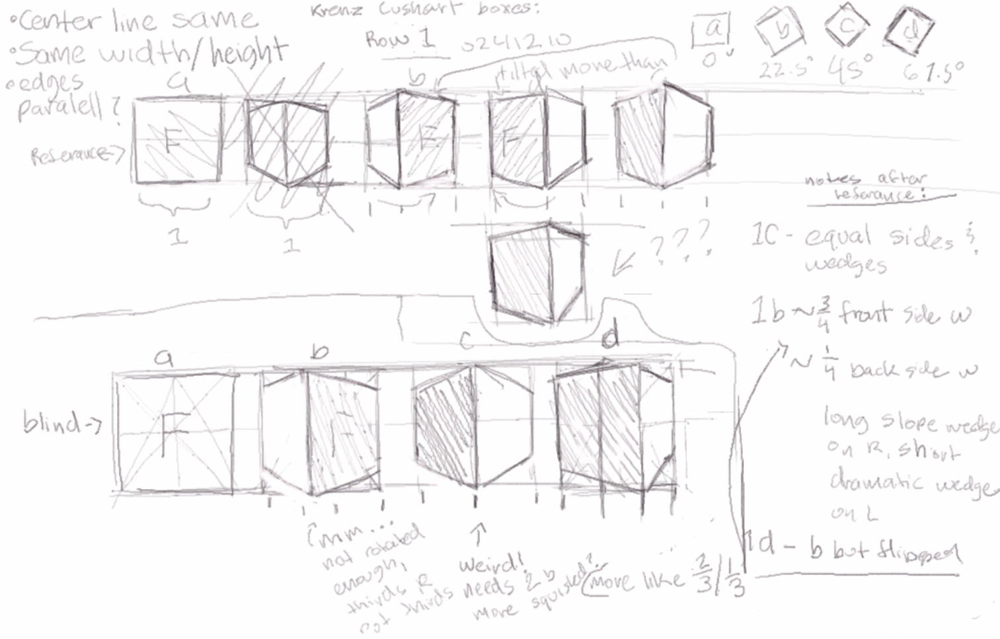
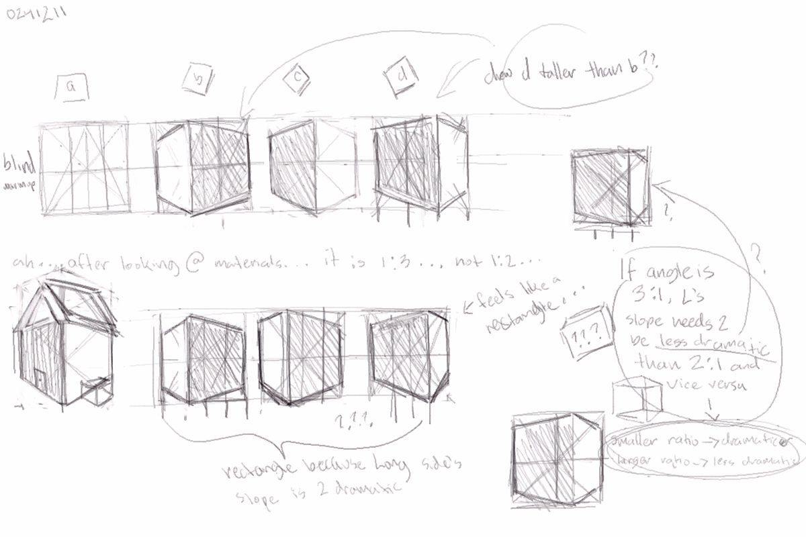
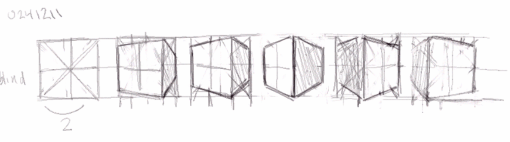
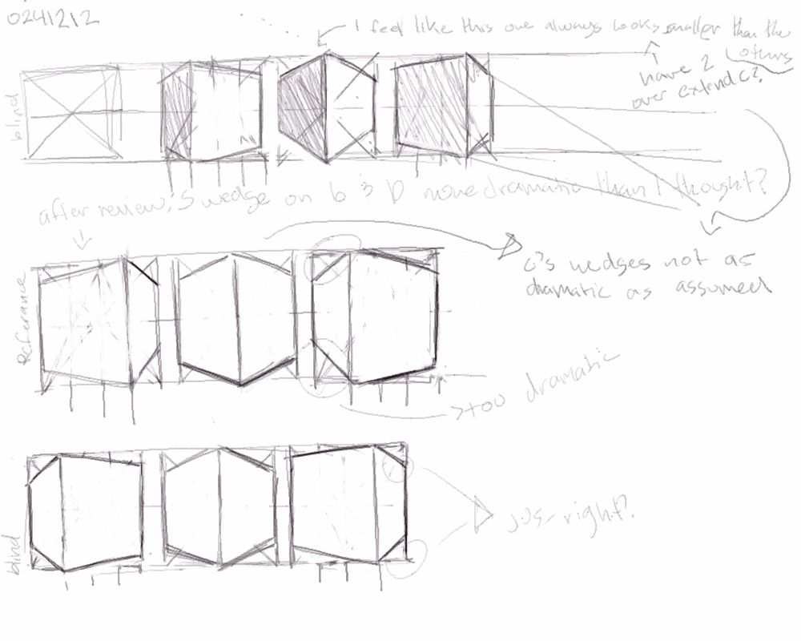
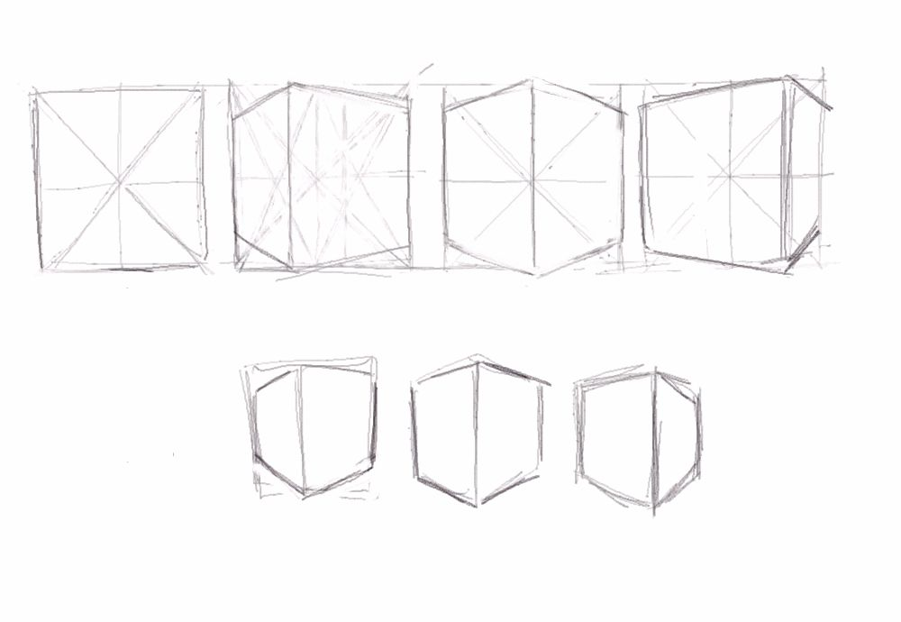
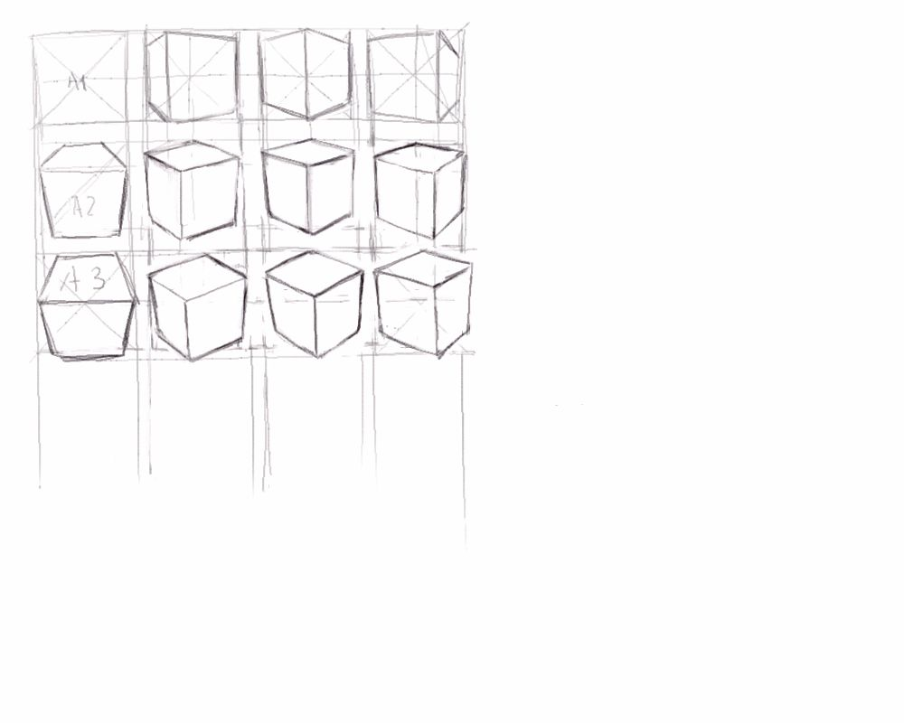
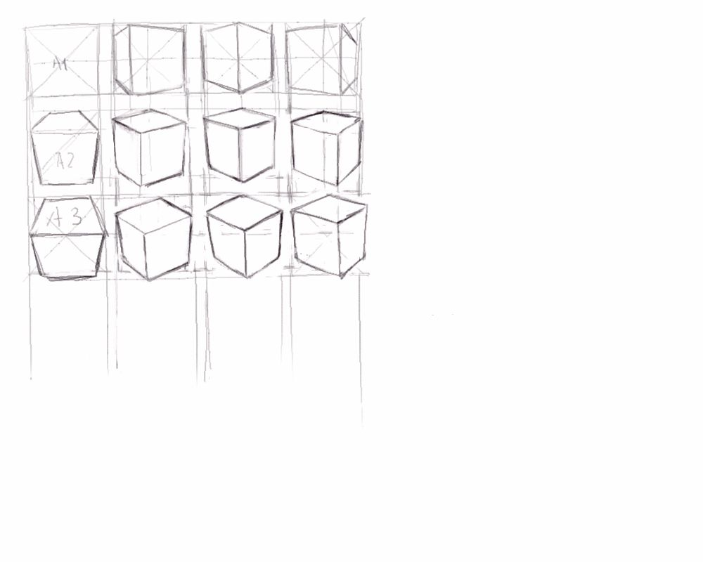
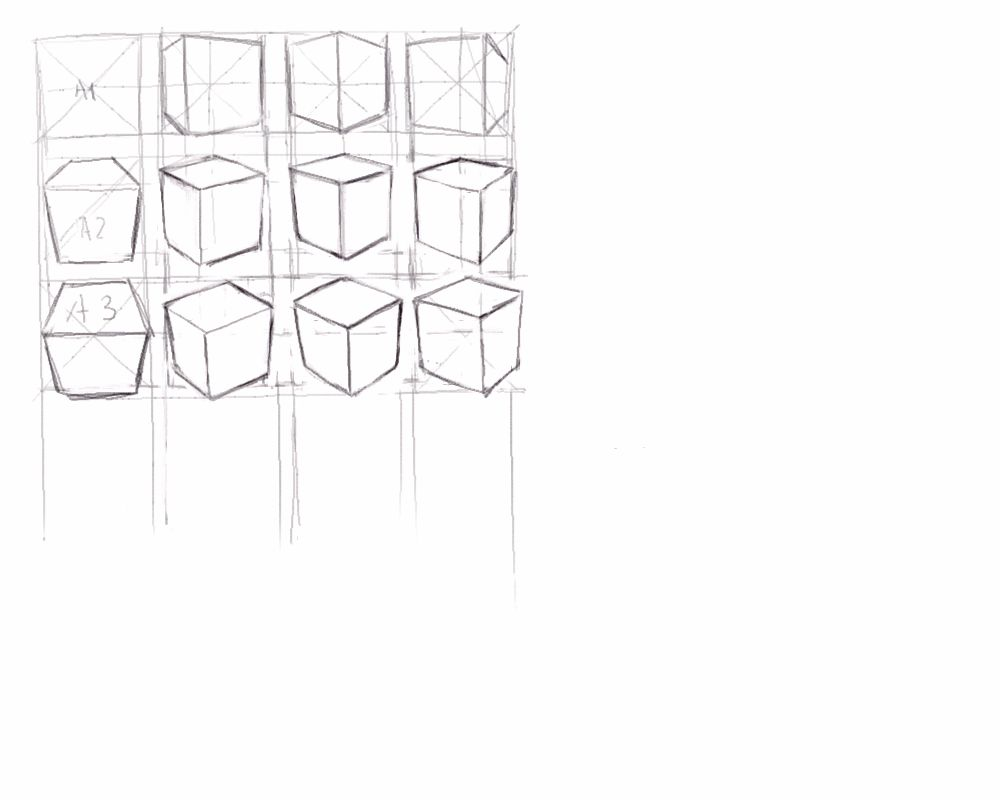

Boxes





 


Progress (out of 200*):
Mostly done in ゆめいろのえのぐ/emotion paint/yumeiro no enogu or on paper; Based off Krenz Cushart's gumroad bundles and shouh_'s box chart
Partial Log/Notes: (*╯^╰)
- 0241210 - Start! Row 1, referanced study -> notes -> blind study; Height & width of rotations are the same as box facing straight ahead; center line same; edges parallel? -> 1c - equal sides and wedges -> 1b ~¾ front side w ~¼ back side w, long sloped wedge on L, short dramatic wedge on R -> 1d - b but flipped -> blind study -> more like ⅓/⅔?
- 0241211 - bought the 3 lesson gumroad bundle... blind study/warm-up -> looked at materials -> "oh nvm it is 4:1" -> tried referenced study with correct ratio -> looked off? -> studied more -> "ooooooohhhhh" -> smaller ratio means more dramatic slope, larger ratio means less dramatic slop, therefore the slope of the wedged 4 the 4:1 box needs to be less dramatic than what I drew for the 3:1 box -> blind a couple hours later to test my memory
- 0241212 - drew 9 boxes, blind then referenced then blind. feels like i always draw C smaller than the other boxes ;; heve to overextend corners? -> after review: S wedge on B & D more dramatic than I thought? (make L wedge less slope-y)
- 0241216 - drew 9 boxes, on paper
- 0241218 - drew 6 boxes, on paper
- 0241219 - drew 10 boxes, on paper, tried to start on second row and failed
- 0250219 - drew 21 boxes, on paper. All blind, hesitantly stepping into the second row
- 0250313 - drew 11 boxes, referenced, stared row 3
- 0250509 - long time no log, oops. Still drawing boxes. Just hard to count when they're mostly on paper.
- 0250512 - slowly chipping awat at the third row... think i make my lines too dramatic hmm
- 0250606 - I GET IT NOW!!! !OMG!!!!!!!! THEY'RE THE SAME ON BOTH AXIS.... like a multipication table.... the neurons are firing.
*I'm definitely going to do more than 200, since I'm doing these as a warmupp for when a draw untill forever hopefully, but this is a starting off point since goals are supposed to be specific and measurable... or whatever.